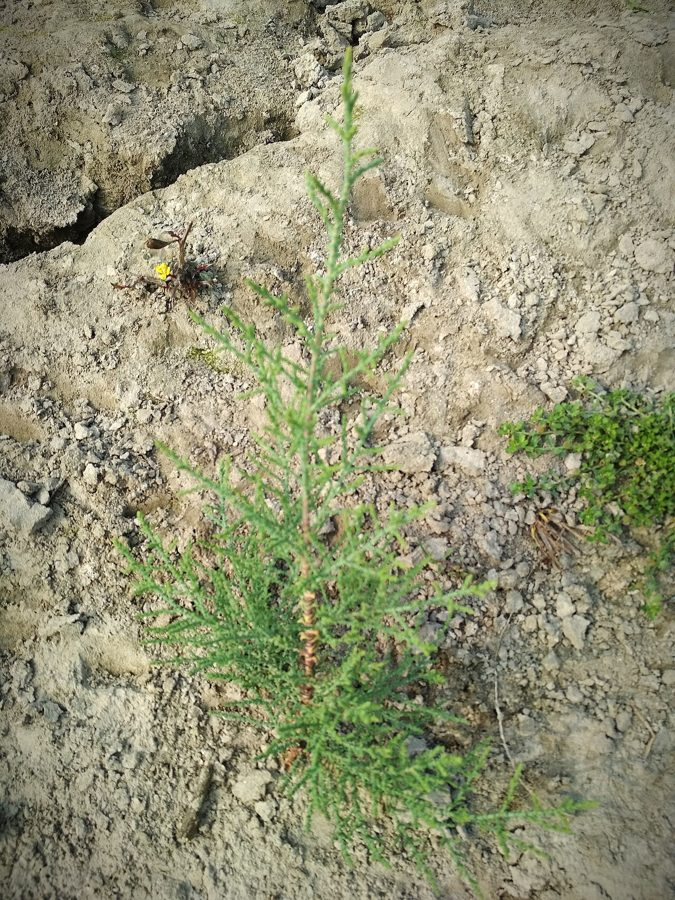

झाऊJhau
Tamarix dioica · Tamaricaceae · FLR-0164

- Scientific name
- Tamarix dioica Roxb. ex Buch.-Ham.
- Family
- Tamaricaceae
- Hindi
- झाऊ
- Local names
- jhau, jhaul, tamarisk, salt cedar
- Status here
- native
- Movement
- Resident, here all year
- IUCN
- not evaluated
- Review
- audited and independently read
When to look कब देखें
Present all year.
Uses and possibilities उपयोग और संभावनाएँ
Drawn from the documented uses in the profile below, where each is labelled traditional, current or a research lead. All uses →
झाऊ / Jhau
Tamarix dioica Roxb. ex Buch.-Ham. — Tamaricaceae
झाऊ — नदियों और सड़े पानी के किनारे उगने वाली झाड़ी। पतली, लचकदार टहनियाँ जो रस्सी और टोकरियाँ बनाने में काम आती हैं। नमकीन और क्षारीय जमीन को सहन कर सकती है, जहाँ कुछ और नहीं पनपता। फूल गुलाबी, सुंदर।
Quick Identification त्वरित पहचान
| Feature | Description |
|---|---|
| Size | Deciduous to semi-evergreen shrub or small tree 2–5 m tall, much-branched |
| Leaves | Minute, scale-like, adpressed, 1–2 mm, giving a feathery appearance |
| Flowers | Small, pink or white, in slender spike-like inflorescences (racemes), February–April |
| Fruit | Minute capsule, wind-dispersed |
| Stems | Very thin, wiry, flexible, often reddish |
| The test | The feathery foliage and flexible branches are distinctive |
Field tip: Along rivers and canal banks, look for a dense, feathery-foliaged shrub with very thin, flexible branches. In spring, it bears delicate pink flower spikes. The plant tolerates saline and waterlogged soils where few other plants grow.
हिंदी — कैसे पहचानें: पतली, लचकदार टहनियाँ। पत्तियाँ बहुत सूक्ष्म, पंख जैसी। गुलाबी फूलों की पतली बालियाँ। नमकीन जमीन में भी पनपता है।
Morphology आकारिकी
Biometrics (shrubs on saline and alkaline soils):
| Measurement | Range |
|---|---|
| Height | 2–5 m |
| Stem diameter | 0.5–2 cm |
| Leaf length | 1–2 mm |
| Flower spike length | 3–8 cm |
Stem and branches: Very thin, wiry, flexible, often reddish or greenish. Young growth is hairy.
Leaves: Minute, scale-like, adpressed to the stem, giving the appearance of a feathery, fern-like foliage.
Flowers: Small, four or five-petalled, pink or white, arranged in slender, terminal racemes.
Fruit: A minute capsule, splitting into three or four valves, with many tiny, wind-dispersed seeds.
हिंदी: तने और शाखाएँ बहुत पतली, लचकदार, लाल-हरी। पत्तियाँ तराज़ू जैसी, बहुत छोटी। फूल गुलाबी, पतली बालियों में।
Behaviour & Ecology व्यवहार और पारिस्थितिकी
Jhau is a shrub of riverbanks, water-logged areas, and saline and alkaline soils across South Asia. It is one of the few plants capable of tolerating high salt concentrations in soil and water. The flexible stems are remarkably strong and are used for basketry and cordage. The plant stabilizes embankments and is sometimes planted in saline reclamation schemes. It coppices readily after cutting.
हिंदी: नदियों, तालाबों, नमकीन जमीन में उगता है। जहाँ और कुछ नहीं पनपता, वहाँ यह जीता है। तने से रस्सी और टोकरियाँ बनती हैं।
Life Cycle / Phenology जीवन चक्र
| Month / season | Event |
|---|---|
| February–April | Flowering; pink spikes on feathery foliage |
| April–June | Fruit ripens; seeds disperse by wind |
| July–September | Monsoon growth; vigorous branching |
| 2–3 years from seed | First flowering |
Seeds are tiny and germinate readily in moist, saline soils. Lifespan reaches 30–50 years.
हिंदी: फरवरी-अप्रैल में फूल। गर्मी में फल और बीज। बरसात में बढ़ाई होती है।
Associated Species / Interactions संबंधित प्रजातियाँ
- Companions on saline lands: Often grows with Soapnut and other salt-tolerant species.
- Stabilizer: Roots stabilize riverbanks and embankments.
Pests and Diseases कीट और रोग
- Minor leaf-eating insects; rarely serious.
- No significant fungal diseases in saline and semi-arid climates.
Agricultural / Human Relevance कृषि प्रासंगिकता
Traditional and Ethnobotanical Use (documented uses):
- Basketry and cordage. The thin, flexible, strong stems are woven into baskets, mats, and cords.
- Soil stabilization. Planted on riverbanks and embankments to prevent erosion.
- Fodder. Leaves are lopped for livestock in dry seasons, though less palatable than preferred fodder species.
Today. Jhau basketry is a traditional craft in some river communities. The plant is also used in agroforestry and saline land reclamation.
Research direction (a lead, not a result). The mechanical strength of jhau stems and the traditional basketry techniques would merit documentation.
हिंदी: तने से रस्सी, टोकरियाँ, चटाई बनती हैं। नदी के किनारे मिट्टी को रोकता है। पशुओं को पत्ती खिलाई जाती है।
Expected Locally स्थानीय रूप से अपेक्षित
Not a field record. Written from published accounts for eastern Uttar Pradesh. No confirmed local sighting yet — if you have seen it, that is what the atlas needs.
अभी तक स्थानीय पुष्टि नहीं। यह विवरण प्रकाशित स्रोतों से है, किसी अवलोकन से नहीं।
To be expected on river banks, canal margins, and water-logged areas with saline or alkaline soils across Basti district.
Distribution वितरण
Global range: Native to saline and semi-arid regions of South Asia and Central Asia, from Pakistan through India to China and beyond.
In India: Along rivers and saline areas throughout the plains.
In Uttar Pradesh: Scattered on river banks and in saline areas.
In Basti district / eastern UP: Expected on river banks and water-logged saline soils.
Research Questions शोध प्रश्न
Anyone can investigate these | कोई भी इन प्रश्नों की जाँच कर सकता है
- Where are the jhau shrubs in your area, and how are they used? / आपके क्षेत्र में झाऊ कहाँ है? — Walk riverbanks and document locations.
- Who still makes baskets or cordage from jhau, and what is the process? — Interview craftspeople about traditional techniques.
- How long can a basket or cord made from jhau last if used daily? — If available, acquire a jhau basket and ask the maker about durability.
- Do livestock actually eat the foliage, and is it nutritious compared to other fodder? — Ask herders about feeding practices and palatability.
- How salt-tolerant is jhau compared to other riverside plants? — Compare soil salinity near jhau with that near other species.
Similar Species मिलती-जुलती प्रजातियाँ
| Species | How to tell apart | हिंदी |
|---|---|---|
| Tamarix stricta (another tamarisk) | Flowers white; slightly different habitat preference | अलग प्रजाति — सफ़ेद फूल |
| Sesbania (Sesbania sesban) | Pinnate leaflets; herbaceous; completely different appearance | सेस्बानिया — बड़ी पत्तियाँ |
| Acacia (Acacia arabica) | Spines present; pinnate leaves; different flowers | बबूल — काँटे, पीले फूल |
Field rule: A feathery-foliaged shrub with very thin, flexible branches and pink flower spikes, on waterlogged or saline soils, is jhau.
Taxonomy & Classification वर्गीकरण
Original description. Described by Roxburgh and Hamilton in 1824 in Flora Indica. The genus name Tamarix comes from the Tamarisk tree of classical literature.
Subspecies. Monotypic — no subspecies are currently recognised.
Family and order placement. Tamaricaceae, the tamarisk family, in the order Caryophyllales. The genus Tamarix holds about 50 species, many widespread in arid and saline regions.
Phylogenetic notes. Tamarix dioica is closely related to other South Asian Tamarix species and shares salt tolerance and flexible stem traits.
IUCN status rationale. Not evaluated. Widespread on saline and semi-arid soils.
Photo Gallery फोटो गैलरी
Photos needed आवश्यक फोटो
- [ ] Whole shrub in leaf and flower (पूरी झाड़ी)
- [ ] Feathery foliage (पत्तियाँ)
- [ ] Pink flower spikes (फूल)
- [ ] Close-up of stems (टहनियाँ)
- [ ] Basket or cordage made from jhau (टोकरी)
No photos yet — add field photos to media/species/jhau/ and run node scripts/sync_photos.js.
References संदर्भ
- Roxburgh, W. & Hamilton, F. (1824). Flora Indica, vol. 1, p. 447. Government Printing, Serampore. [original description]
- Hooker, J.D. (1875). The Flora of British India, vol. 1. L. Reeve, London. (Tamarix)
- Kirtikar, K.R. & Basu, B.D. (1935). Indian Medicinal Plants, 2nd ed., vol. 2. Lalit Mohan Basu, Allahabad.
- Duthie, J.F. (1903). Flora of the Upper Gangetic Plain. Government Printing, Calcutta.
- Ehrenfeld, J.G. (2010). Ecosystem consequences of biological invasions. Annual Review of Ecology 41: 59–80. [general reference for tamarisk ecology]
- GBIF Occurrence Data — Tamarix dioica, India (2026).
Source file: species/flora/shrubs/jhau.md